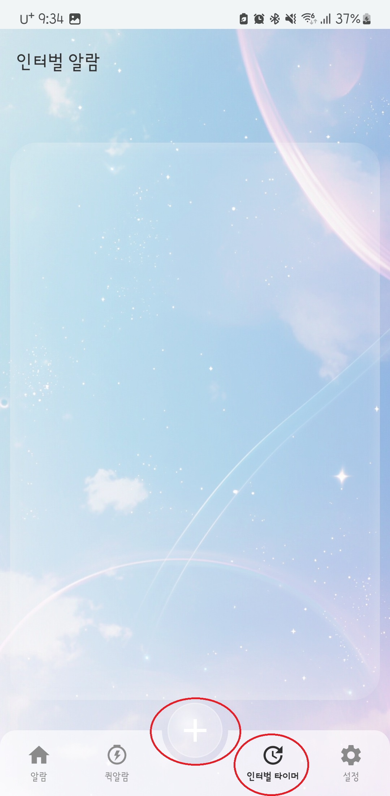
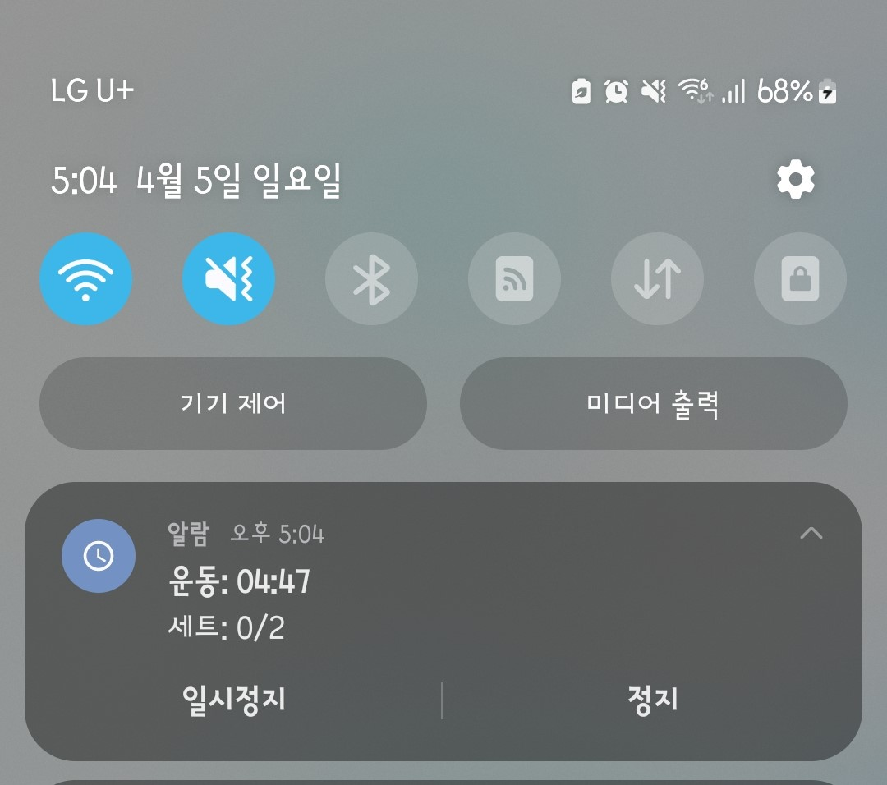

인터벌 알람 사용하기
인터벌 알람은 일정한 간격으로 반복 알림을 주고 싶을 때 사용할 수 있는 기능입니다.
짧은 시간 집중, 휴식 관리, 반복 알림이 필요한 상황에서 유용하게 사용할 수 있습니다.
인터벌 알람 시작하기
인터벌 알람 화면에서 하단의 + 버튼을 눌러 인터벌 알람을 추가할 수 있습니다.
제목, 활동 시간, 휴식 시간, 세트 수 등 필요한 항목을 설정한 뒤 시작하면 설정한 주기에 따라 알림이 반복됩니다.

실행 중 상태 확인
인터벌 알람이 실행 중일 때는 상단 알림 영역에 현재 상태가 표시됩니다.
알림에서는 현재 운동 또는 휴식 단계, 남은 시간, 진행 중인 세트 정보를 확인할 수 있습니다.
필요하면 상단 알림에서 바로 일시정지하거나 정지할 수 있습니다.

상단 알림에서 현재 인터벌 알람 상태를 확인하고 바로 제어할 수 있습니다.
활용 예시
- 공부 시간과 휴식 시간 나누기
- 운동 루틴 관리
- 일정 시간마다 확인이 필요한 작업 알림
참고해주세요
인터벌 알람은 일반 기상 알람과 목적이 다를 수 있으므로, 사용 상황에 맞게 적절히 활용하는 것을 권장합니다.
장시간 사용하는 경우에는 상단 알림을 통해 현재 진행 상태를 수시로 확인하는 것이 편리합니다.